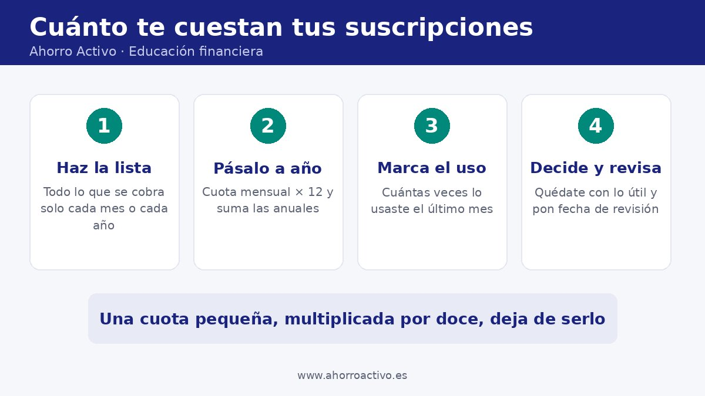

Por David Finanzas
Educación financiera |
Cuánto te cuestan tus suscripciones al año: cómo calcularlo y revisarlas
Una suscripción de 10 euros al mes parece poca cosa. El problema es que casi nunca estás pagando una sola: el vídeo, la música, el gimnasio, el almacenamiento del móvil, alguna aplicación que probaste un día. Cada una se cobra sola y ninguna llama la atención por separado. Esta guía explica cómo sumarlas, cómo verlas en coste anual y cómo decidir con calma cuáles te compensan.

Paso 1: haz la lista completa
Abre el extracto de tu cuenta y de tu tarjeta de los últimos tres meses y apunta todo lo que se repite. Fíjate en los cargos pequeños y en los que no son mensuales: hay servicios que se cobran una vez al año y por eso pasan desapercibidos. Si pagas algo desde una tienda de aplicaciones del móvil, mira también ahí, porque el cargo aparece con el nombre de la tienda y no con el del servicio.
Paso 2: pásalo todo a coste anual
Multiplica cada cuota mensual por 12 y suma las que ya son anuales. Es la misma idea que verás en la guía de gastos hormiga: lo que cuesta poco cada vez cuesta bastante al cabo del año.
Ejemplo ilustrativo con cifras inventadas
Estos importes son inventados, solo sirven para entender el método. Cada persona tendrá otros servicios y otros precios.
| Suscripción | Al mes | Al año |
|---|---|---|
| Plataforma de vídeo | 13,99 € | 167,88 € |
| Música en streaming | 10,99 € | 131,88 € |
| Gimnasio | 29,90 € | 358,80 € |
| Almacenamiento en la nube | 2,99 € | 35,88 € |
| App de pago que casi no abres | 4,49 € | 53,88 € |
| Total | 62,36 € | 748,32 € |
Cinco servicios, ninguno de los cuales pasa de 30 euros al mes, suman 62,36 euros mensuales y 748,32 euros al año. Si dejaras de usar la aplicación de pago y el almacenamiento, que en este ejemplo apenas tocas, ahorrarías 89,76 euros al año.
Paso 3: mira cuánto usas cada una
Una pregunta sencilla ayuda mucho: ¿cuántas veces la usé el último mes? Para saber qué te cuesta realmente cada uso, divide la cuota entre las veces que lo usaste. Si pagas 29,90 euros de gimnasio y fuiste 2 veces, cada visita te salió a casi 15 euros (29,90 ÷ 2 = 14,95). Si fuiste 12 veces, a unos 2,50 euros. Con el mismo gasto, el valor es muy distinto.
Paso 4: decide y pon una fecha de revisión
Para cada suscripción tienes tres opciones: mantenerla, darla de baja o cambiarla por un plan más barato. Si dudas, puedes darla de baja y volver a contratarla si la echas de menos. Después apunta en el calendario una revisión cada tres o seis meses, porque el problema casi nunca es la decisión de hoy, sino olvidarte de volver a mirarlas.
Qué mirar antes de contratar o cancelar
- Si el periodo de prueba gratuito se convierte en pago, y en qué fecha.
- Si el precio sube pasado el primer periodo o si la renovación es automática.
- Si el plan anual sale más barato, pero te obliga a pagar de golpe y puede no ser reembolsable.
- Cómo se da de baja: desde la cuenta del servicio, desde la tienda de aplicaciones o con tu banco.
- Qué pasa con tus datos o tus archivos al cancelar.
Cómo encaja en tu presupuesto
Las suscripciones son un gasto fijo, así que tienen su sitio en el presupuesto mensual. Si quieres ver cuánto margen te queda una vez apuntadas, puedes usar la calculadora de presupuesto. Lo que dejes de pagar puedes destinarlo a tu fondo de emergencia, por ejemplo.
Errores comunes
- Mirar solo la cuota mensual y no el coste de todo el año.
- Mantener algo por si acaso, sin haberlo usado en meses.
- Olvidar que un periodo de prueba gratuito termina y se renueva solo.
- Pagar dos servicios que hacen lo mismo.
- No dejar apuntada una fecha para volver a revisar.
Preguntas frecuentes
¿Merece la pena el plan anual? Puede salir más barato por mes, pero pagas de golpe y a veces no hay reembolso si lo dejas de usar. Solo compensa si estás seguro de que lo vas a usar todo el año.
¿Cómo sé si me cobran algo que ya no uso? Revisa el extracto de los últimos meses y busca cargos que se repiten. Si no reconoces uno, mira primero tu correo y la tienda de aplicaciones de tu móvil, y si sigues sin saber de qué es, pregunta a tu banco.
¿Cada cuánto conviene revisarlas? Cada tres o seis meses suele bastar. Lo importante es dejarlo apuntado en el calendario para no depender de acordarte.
Fuentes y más información
- Banco de España – Planifica tus compras para evitar caer en el sobreendeudamiento: recomendaciones generales de planificación del gasto.
- Finanzas para Todos – ¿Cómo gestionar mis deudas?: educación financiera del Banco de España y la CNMV.